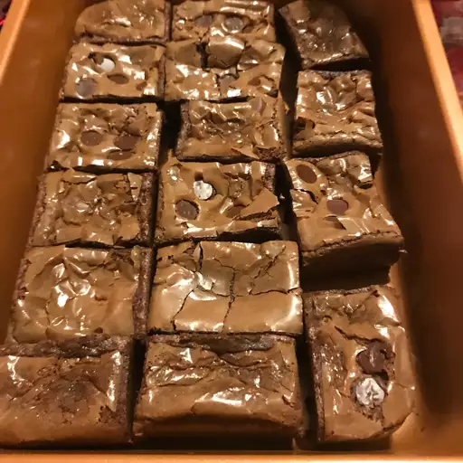

brownie

make some damn brownies dont add c*c*ine tho
ingredients
- 1 ½ cups unsalted butter
- 3 cups white sugar
- 2 teaspoons vanilla extract
- 1 ¼ cups unsweetened cocoa powder
- egg
- 1 ¼ cups all-purpose flour
- 1 pound chopped walnuts
recipe
- Preheat oven to 350 degrees F (175 degrees C). Line one 9x9-inch baking pan with foil and spray with cooking spray
- Preheat oven to 350 degrees F (175 degrees C). Line one 9x9-inch baking pan with foil and spray with cooking sprayPreheat oven to 350 degrees F (175 degrees C). Line one 9x9-inch baking pan with foil and spray with cooking spray
- Sift flour, cocoa, and salt together. Add flour mixture to butter mixture, mixing until combined. Stir in walnuts. Spread batter into the prepared pan.
- Bake in preheated oven until brownies are set (a toothpick inserted in the center should have small crumbs clinging to it, rather than wet batter), 45 to 50 minutes. Do not overbake!
back